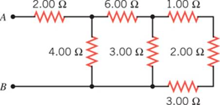
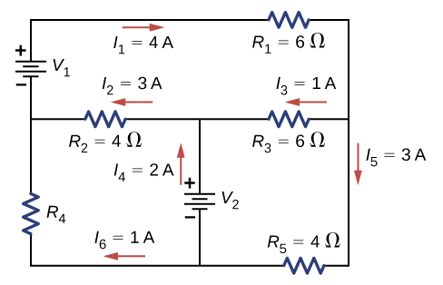

C4.X Problems#
Problem C4.1
What are the largest and smallest resistances you can obtain by connecting a \(36.0~\Omega\), a \(50.0~\Omega\), and a \(700.0~\Omega\) resistor together?
This problem is a slightly modified version from OpenStax. Access for free here
# DIY Cell
Problem C4.2
Given a 48.0 V battery and \(24.0~\Omega\) and \(96.0~\Omega\) resistors, find the current and power for each when connected in series.
Repeat when the resistances are in parallel.
This problem is a slightly modified version from OpenStax. Access for free here
# DIY Cell
Problem C4.3
Find the total resistance of this combination of series and parallel resistors shown below.
# DIY Cell
Problem C4.4
Consider the circuit shown below. The terminal voltage of the battery is 18.00 V.
Find the equivalent resistance of the circuit.
Find the current through each resistor.
Find the potential drop across each resistor.
Find the power dissipated by each resistor.
Find the power supplied by the battery.
This problem is a slightly modified version from OpenStax. Access for free here
# DIY Cell
Problem C4.5
Consider the circuit shown below.
Find the voltage across each resistor.
What is the power supplied to the circuit and the power dissipated or consumed by the circuit?
This problem is a slightly modified version from OpenStax. Access for free here
# DIY Cell
Problem C4.6
Consider the circuit shown below. Find \(V_1\), \(V_2\), AND \(R_4\).
This problem is a slightly modified version from OpenStax. Access for free here
# DIY Cell
Problem C4.7
Consider the circuit shown below.
Find \(I_1\), \(I_2\), \(I_3\), \(I_4\), AND \(I_5\).
Find the power supplied by the voltage sources.
Find the power dissipated by the resistors.
This problem is a slightly modified version from OpenStax. Access for free here
# DIY Cell